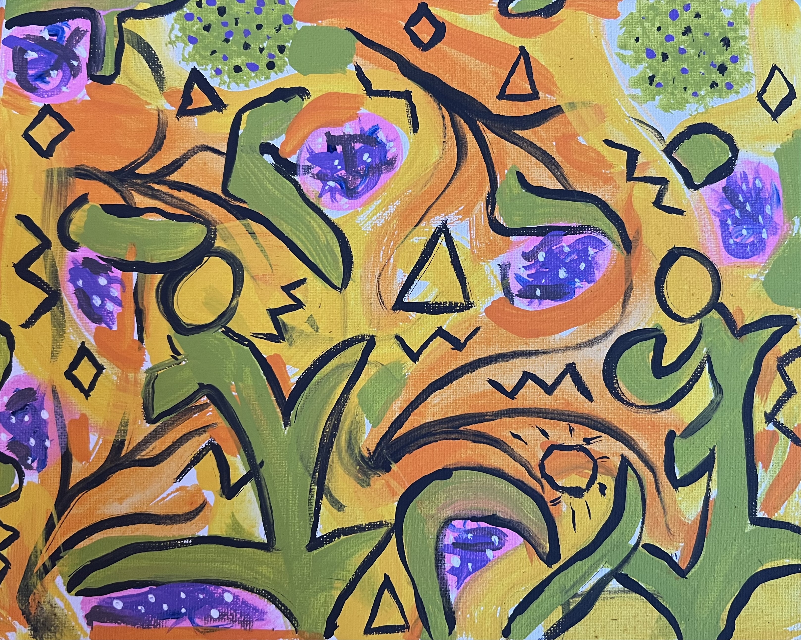
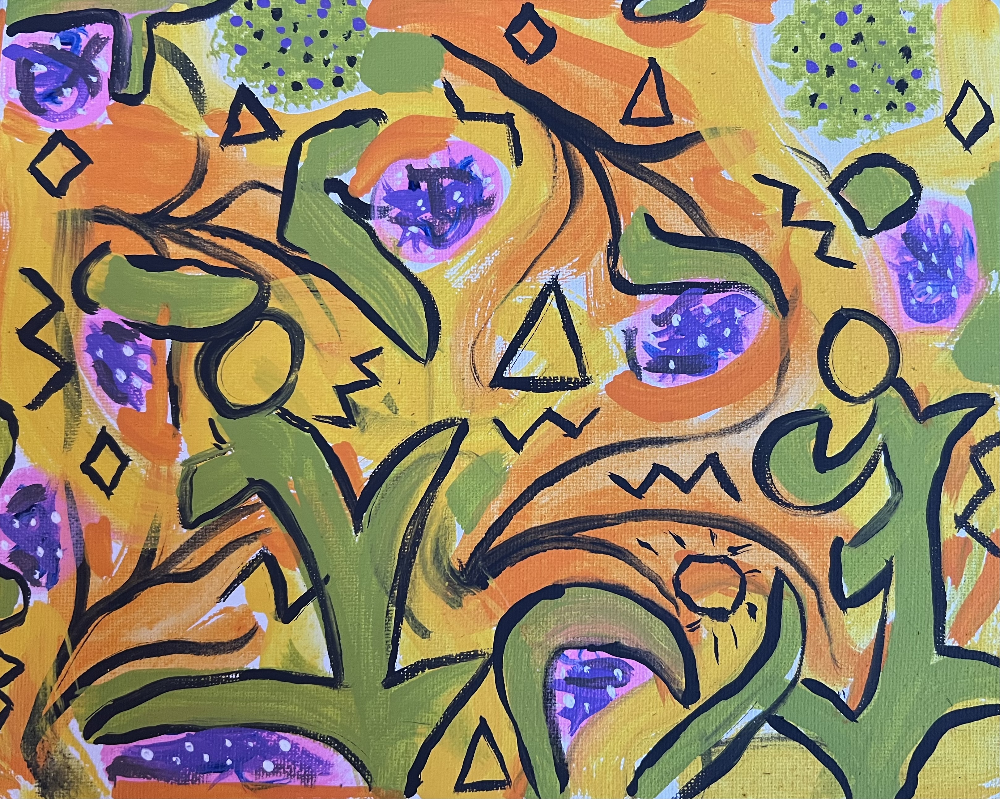

"Matters of the Heart," Lucy Calotta
"Underpassed," Chelsea Pappa
"Dissolve-1," Mica Siegler
"Keith Haring Facsimile," Pablo Peltier
Untitled, Matthew Nzasi
"Evening of Dunes," Julia Kebuladze
Untitled, Hannah Kaplan


 
